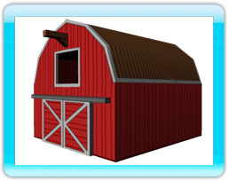
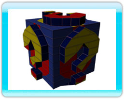

De karakters in Dragon Master Spell Caster zijn erg bekwame tovenaars. Maar niet alles wat ze doen gaat goed. Soms mislukt een betovering, maar dat is niet altijd slecht .... Deze bijzondere betoveringen komen vaker voor als je kampioen en Draak niet bij elkaar horen, bijvoorbeeld Vourak (vuur) met Unga (aarde).
Boerderij dieren
Soms zie je een kleine schuur verschijnen als je betovering mislukt. Als je door de schuur heen vliegt veranderd de richtingsknop indicator op je scherm en krijg je de mogelijkheid om een van de vier verschillende dieren te selecteren: schaap, kip, koe en varken. Nadat je een dier gekozen hebt met de richtingsknop wordt je tijdelijk getransformeerd in dat dier. Je hebt dan de mogelijkheid om nieuwe betoveringen uit te voeren. Zodra je drie betoveringen hebt uitgevoerd veranderd je Draak weer terug. Als de betovering je tegenstander raakt heeft dit negatieve gevolgen voor hem, afhankelijk van het dier dat je gekozen hebt.
Magische Doos
Soms zie je een 'magische doos' verschijnen als je betovering mislukt. Als je door deze doos vliegt heeft dit een willekeurig effect op je Draak. Het is altijd een positief effect, dus probeer er doorheen te vliegen.